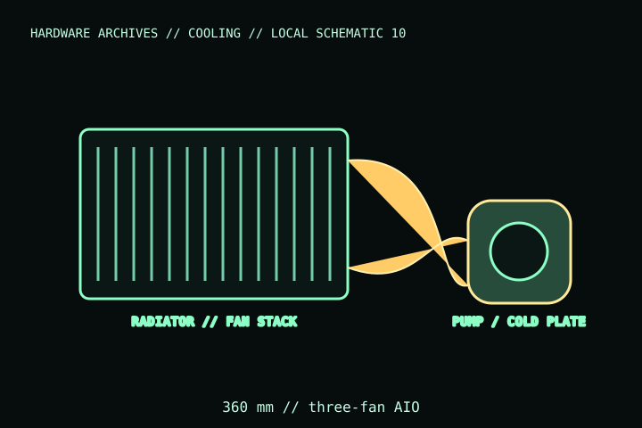

[ INDIVIDUAL COMPONENT // COOLING ]
LIAN LI Galahad II Trinity 360
A 360 mm Galahad II Trinity AIO, cataloged at the product-family/model level. Trinity was sold with different fan/color bundles, so verify the full SKU and included fan/control wiring before ordering parts.

IDENTIFICATION: Match the complete model name, suffix, article number, bundle, revision, and host manual to the physical label before installation. Similar product names and variants may use different wiring or dimensions.
Specifications
| Catalog subcategory | All-in-one liquid coolers |
|---|---|
| Exact model | LIAN LI Galahad II Trinity 360; distinguish the standard ARGB, SL-INF, and color/SKU variants |
| Radiator class | 360 mm radiator with three 120 mm fan positions; verify exact radiator and fan dimensions in the selected-SKU manual |
| Pump / control | Integrated pump with replaceable pump-cover designs; pump/fan/lighting wiring depends on the included fan variant. |
| Socket support | Manufacturer lists Intel LGA1700/1200/115x and AMD AM5/AM4 for this generation; confirm current SKU manual. |
| Clearance / host | Case must have compatible 360 mm radiator mounting; check combined fan/radiator thickness, fittings, tube reach, GPU, RAM, and board clearance. |
Compatibility, installation & service
- Select the exact model code and bundled fan type first; connector and lighting-control details differ across Trinity variants. Do not connect 5 V ARGB to 12 V RGB.
- Check the selected SKU manual for socket kit, radiator dimensions, pump header/power wiring, fan header, and controller requirements.
- Confirm that the case supports the full radiator/fan stack and tubing route; a nominal 360 mm position may not clear the board or GPU.
Service notes
AIO loop is not user-serviceable: do not open, refill, or bend tubing sharply. Inspect for leaks and pump noise; disconnect power and replace the assembly if the loop is damaged. Keep radiator fins clear.
Manufacturer references
- LIAN LI — Galahad II TrinityManufacturer model family page lists sizes, socket support, cover/fan variants, and downloadable documents.
- LIAN LI — SupportManufacturer manuals and model-specific support.
Verify fit, wiring, and ratings against the manufacturer document for the exact unit and host. This catalog record is an identification aid, not a compatibility guarantee.